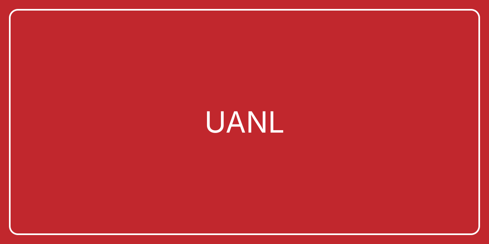
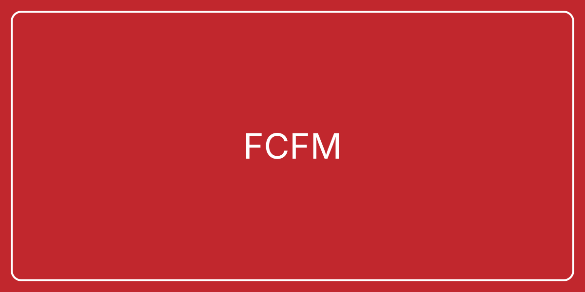
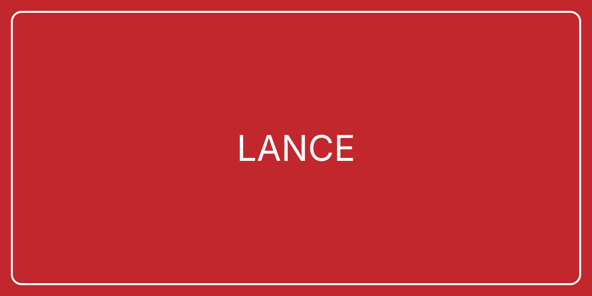
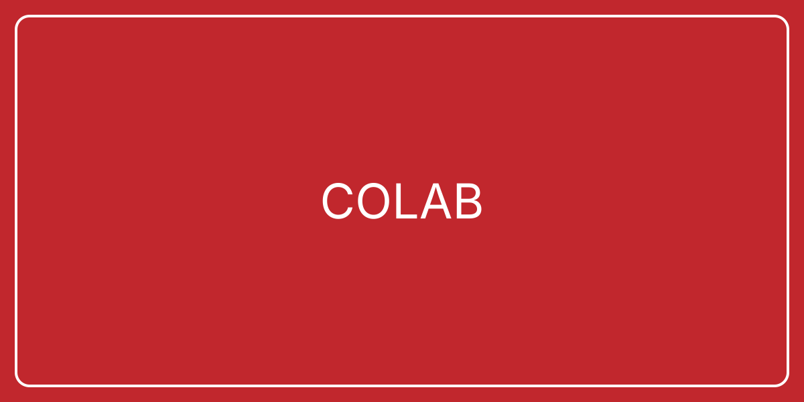

¿Qué es LANCE?
LANCE UANL es un espacio de investigación, innovación y divulgación científica de la Facultad de Ciencias Físico Matemáticas. Integra iniciativas interdisciplinarias para fortalecer la formación académica y la vinculación institucional.
Instituciones colaboradoras




Investigación
Desarrollo de líneas de investigación en observación astronómica, análisis de datos y formación de recursos humanos especializados.
Servicios
Asesoría técnica, talleres de divulgación, colaboración interinstitucional y soporte para proyectos científicos y educativos.
Contacto
Facultad de Ciencias Físico Matemáticas, UANL · Monterrey, Nuevo León · contacto.lance@uanl.edu.mx